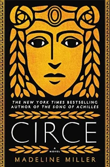

Circe

by Madeline Miller, 2018.
Recommended by The Suze, after reading it for one of her book clubs, and I absolutely loved it.
Tells the life story of the mythical Circe of the ancient Greek pantheon. Daughter of Helios, mightiest of the Titans, Circe is driven from her family by their capricious cruelty. She puts her meagre supernatural talents to work in service of witchcraft, amongst mortals. Along the way she meets many well-known mythological characters, such as Odysseus, and the Cretean Minotaur.
It was the writing style that captivated me. A timeless, elegant style uses powerful turns of phrase to spin a tale of drama and high passions, soaked in the psychological resonances so typical of Greek mythology. This style, along with the setting, reminded me powerfully of another favourite couple of novels of recent years, Mary Renault's absolutely fabulous The King Must Die and The Bull From the Sea.
Circe is my favorite book of the year so far, beating out even the marvellous Klara and the Sun.